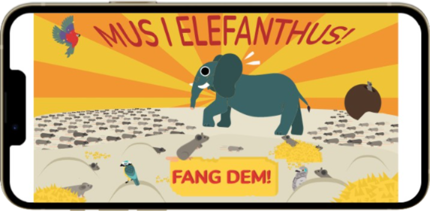
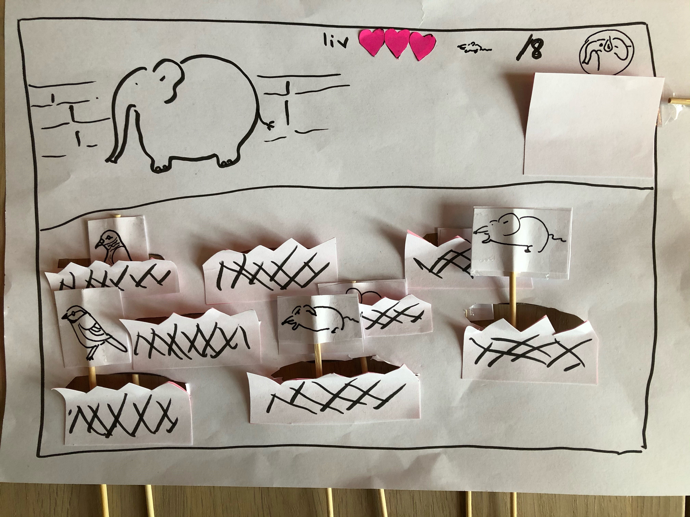
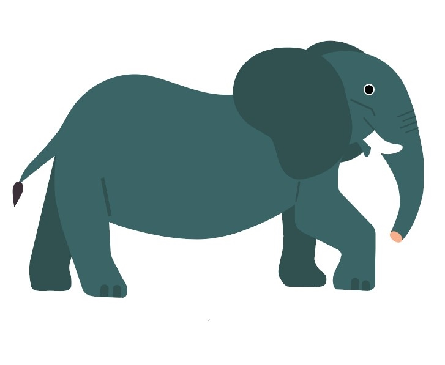
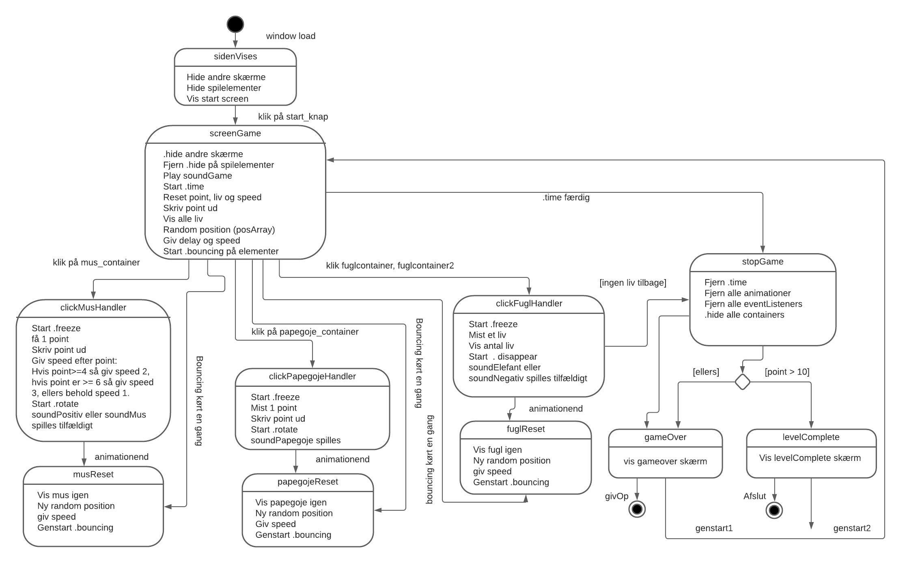
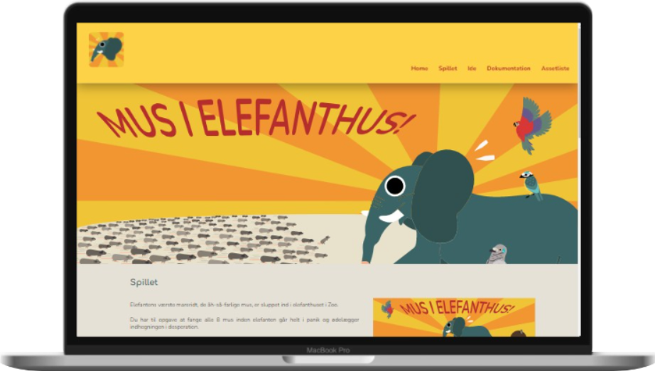

The Process
In this project we had to make a very simple game. The
requirements for the task were that there had to be a point
system and game elements where some would give points while
others would take points from the player. The user had to be
able to win or lose the game depending on a certain number of
points. A winning screen and a losing screen had to be made to
make it clear for the player what the result of the game was.
Lastly, the game should end after a certain amount of time.

Concept
We began with the design and concept of the game. To generate
ideas, we used mindmap as a method. This resulted in many crazy
ideas like a game where aliens had to catch cows. However, I
ended up being inspired by the myth that elephants are afraid of
mice. In the game you must catch the mice before the elephant
panics and destroys its beloved home After choosing the concept
a paper prototype was made and tested by users to improve it
further.

Game Design
The design of the game had to be in a chosen style and from that
we had to make moodboard and styletile to make the final design
decisions. I choose the designer Owen Davey who combines 2D
design with details which creates a subtle 3D effect. Especially
the character design is drawn in this style. I started off by
sketching and drawing by hand and later draw in Adobe
Illustrator using primarily geometric shapes instead of the pen
tool.

Planning Code
After designing we had to plan how to code the game. This was
done by making an activity diagram and a state machine diagram
which made the coding more manageable.

Game Website
After the game was finished, we had to code a website with
documentation and a list of assets. The website was planned
using layout diagrams and was coded using my skills in HTML and
CSS. Try the game or visit the website to see the result of this
work.
